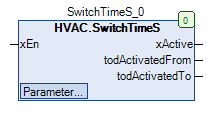

SwitchTimeS (FB)¶
FUNCTION_BLOCK SwitchTimeS
Kurzbeschreibung¶
Schaltuhr mit 5 einstellbaren Zeitperioden und binärem AusgangJede Zeitperiode ist durch eine Einschaltzeit / Ausschaltzeit und ein Datum definiert
Darstellung¶

Schnittstellen¶
Eingänge¶
Name Datentyp Wertebereich Initialwert Funktion xEn BOOL Freigabeeingang
Ausgänge¶
Name Datentyp Wertebereich Initialwert Funktion xActive BOOL Anzeige von aktiven Zeitperioden todActivatedFrom TOD Einschaltzeitpunkt der letzten aktiven Zeitperiode des aktuellen Tags todActivatedTo TOD Ausschaltzeitpunkt der letzten aktiven Zeitperiode des aktuellen Tags
Sollwerte / Parameter¶
Name Datentyp Wertebereich Initialwert Funktion datCH1_Date DATE DATE#2019-01-01 Datum der Zeitperiode 1 todCH1_TimeFrom TOD TOD#07:00 Einschaltzeitpunkt der Zeitperiode 1 todCH1_TimeTo TOD TOD#12:00 Ausschaltzeitpunkt der Zeitperiode 1 xCH1_Mode BOOL TRUE Modus der Anzeige für die Zeitperiode 1 sCH1_Notice STRING ‘Notice’ Text für die Zeitperiode 1 datCH2_Date DATE DATE#2019-01-01 Datum der Zeitperiode 2 todCH2_TimeFrom TOD TOD#07:00 Einschaltzeitpunkt der Zeitperiode 2 todCH2_TimeTo TOD TOD#12:00 Ausschaltzeitpunkt der Zeitperiode 2 xCH2_Mode BOOL TRUE Modus der Anzeige für die Zeitperiode 2 sCH2_Notice STRING ‘Notice’ Text für die Zeitperiode 2 datCH3_Date DATE DATE#2019-01-01 Datum der Zeitperiode 3 todCH3_TimeFrom TOD TOD#07:00 Einschaltzeitpunkt der Zeitperiode 3 todCH3_TimeTo TOD TOD#12:00 Ausschaltzeitpunkt der Zeitperiode 3 xCH3_Mode BOOL TRUE Modus der Anzeige für die Zeitperiode 3 sCH3_Notice STRING ‘Notice’ Text für die Zeitperiode 3 datCH4_Date DATE DATE#2019-01-01 Datum der Zeitperiode 4 todCH4_TimeFrom TOD TOD#07:00 Einschaltzeitpunkt der Zeitperiode 4 todCH4_TimeTo TOD TOD#12:00 Ausschaltzeitpunkt der Zeitperiode 4 xCH4_Mode BOOL TRUE Modus der Anzeige für die Zeitperiode 4 sCH4_Notice STRING ‘Notice’ Text für die Zeitperiode 4 datCH5_Date DATE DATE#2019-01-01 Datum der Zeitperiode 5 todCH5_TimeFrom TOD TOD#07:00 Einschaltzeitpunkt der Zeitperiode 5 todCH5_TimeTo TOD TOD#12:00 Ausschaltzeitpunkt der Zeitperiode 5 xCH5_Mode BOOL TRUE Modus der Anzeige für die Zeitperiode 5 sCH5_Notice STRING ‘Notice’ Text für die Zeitperiode 5
Funktionsbeschreibung¶
Allgemeines¶
Der aktuelle Zeitpunkt ( Datum / Uhrzeit ) wird permanent mit den 5 definierten Zeitperioden verglichen.
Der Anzeigeausgang xActive nimmt den Zustand TRUE an, falls bei aktivem Freigabeeingang ( xEn = TRUE ) mindestens eine der 5 Zeitperioden aktiv ist.
Voraussetzung für den Einsatz des Funktionsbausteins SwitchTimeS
Zur korrekten Funktion ist der Einsatz des Funktionsbausteins TimeRead mit xEn = TRUE erforderlich.
Freigabeeingang xEn¶
xEn xActive todActivatedFrom todActivatedTo Hinweis FALSE FALSE unverändert unverändert FB deaktiviert TRUE Zustand abhängig von den 5 Zeitperioden Einschaltzeitpunkt der letzten aktiven Zeitperiode des aktuellen Tags Ausschaltzeitpunkt der letzten aktiven Zeitperiode des aktuellen Tags FB aktiviert
Anzeigeausgang xActive¶
Der Anzeigeausgang nimmt den Zustand TRUE an, falls bei aktivem Freigabeeingang ( xEn = TRUE ) mindestens eine der 5 Zeitperioden aktiv ist.
xActive xEn Zeitperiode 1 Zeitperiode 2 Zeitperiode 3 Zeitperiode 4 Zeitperiode 5 Hinweis FALSE FALSE X X X X X FB deaktiviert FALSE TRUE FALSE FALSE FALSE FALSE FALSE Keine Zeitperiode aktiv TRUE TRUE FALSE FALSE TRUE FALSE FALSE Mindestens eine Zeitperiode aktiv
Einschaltzeitpunkt der letzten aktiven Zeitperiode des aktuellen Tags todActivatedFrom¶
Dieser Anzeigeausgang nimmt den Wert des Einschaltzeitpunkts der letzten aktiven Zeitperiode an, falls bei aktivem Freigabeeingang ( xEn = TRUE ) das Datum des
aktuellen Zeitpunkts mit dem Datum der Zeitperiode übereinstimmt.
In allen übrigen Situationen wird er nicht verändert.
Ausschaltzeitpunkt der letzten aktiven Zeitperiode des aktuellen Tags todActivatedTo¶
Dieser Anzeigeausgang nimmt den Wert des Ausschaltzeitpunkts der letzten aktiven Zeitperiode an, falls bei aktivem Freigabeeingang ( xEn = TRUE ) das Datum des
aktuellen Zeitpunkts mit dem Datum der Zeitperiode 5 übereinstimmt.
In allen übrigen Situationen wird er nicht verändert.
Zeitperioden 1 - 5 ( X = 1 .. 5 )¶
Jede Zeitperiode ist durch einstellbare Daten ( Einschaltzeitpunkt todCHX_TimeFrom, Ausschaltzeitpunkt todCHX_TimeTo und Datum datCHX_Date ) definiert
Zusätzlich kann eine Betriebsart ( xCHX_Mode ) sowie ein beschreibender Text ( sCHX_Notice ) festgelegt werden.
Liegt der Ausschaltzeitpunkt vor dem Einschaltzeitpunkt, so wird für die Prüfung der Ausschaltzeitpunkt auf den Wert des Einschaltzeitpunkts gelegt.
Eine Zeitperiode ist aktiv, falls das aktuelle Datum mit dem Datum der Zeitperiode übereinstimmt und der Zeitpunkt sich innerhalb der Zeitperiode befindet ( xCHX_Mode = TRUE ).
Eine Zeitperiode ist aktiv, falls das aktuelle Datum mit dem Datum der Zeitperiode übereinstimmt und der Zeitpunkt sich ausserhalb der Zeitperiode befindet ( xCHX_Mode = FALSE ).
Visualisierung¶
Passendes Visualisierungselement aus der HVACV Visu Library: SwitchTimeS
Darstellung¶

Schnittstellen Visu-Element¶
Name Datentyp Typ Initialwert Funktion FB_SwitchTimeS SwitchTimeS VAR_IN_OUT Hier FB SwitchTimeS eintragen Bsp. PRG.SwitchTimeS BMS_Active BOOL VAR_INPUT BMS (Building Management System) GLT (Gebäudeleittechnik). Wenn BMS_Active = TRUE wird die Eingabe/Editierung der Uhren deaktiviert da diese dann nur über das BMS eingestellt werden können. Uhrzeiten können dann nur angeschaut werden. DisableInput BOOL VAR_INPUT DisableInpput = TRUE Uhrzeiten der Wochenuhren können nur angesehen werden und nicht editiert werden./// - BMS (Building Management System) GLT (Gebäudeleittechnik). Wenn BMS_Active = TRUE wird die Eingabe/Editierung der Uhren deaktiviert da diese dann nur über das BMS eingestellt werden können. Uhrzeiten können dann nur angeschaut werden.
Hinweis: VAR_IN_OUT Schnittstellen müssen belegt werden, VAR_INPUT sind optional.
Codesys¶
- InOut:
Scope Name Type Initial Comment Input xEn BOOL Freigabeeingang datCH1_Date DATE DATE#2019-1-1 Datum der Zeitperiode 1 todCH1_TimeFrom TOD TIME_OF_DAY#7:0 Einschaltzeitpunkt der Zeitperiode 1 todCH1_TimeTo TOD TIME_OF_DAY#12:0 Ausschaltzeitpunkt der Zeitperiode 1 xCH1_Mode BOOL TRUE Modus der Anzeige für die Zeitperiode 1 sCH1_Notice STRING ‘Notice’ datCH2_Date DATE DATE#2019-1-1 Datum der Zeitperiode 2 todCH2_TimeFrom TOD TIME_OF_DAY#7:0 Einschaltzeitpunkt der Zeitperiode 2 todCH2_TimeTo TOD TIME_OF_DAY#12:0 Ausschaltzeitpunkt der Zeitperiode 2 xCH2_Mode BOOL TRUE Modus der Anzeige für die Zeitperiode 2 sCH2_Notice STRING ‘Notice’ datCH3_Date DATE DATE#2019-1-1 Datum der Zeitperiode 3 todCH3_TimeFrom TOD TIME_OF_DAY#7:0 Einschaltzeitpunkt der Zeitperiode 3 todCH3_TimeTo TOD TIME_OF_DAY#12:0 Ausschaltzeitpunkt der Zeitperiode 3 xCH3_Mode BOOL TRUE Modus der Anzeige für die Zeitperiode 3 sCH3_Notice STRING ‘Notice’ datCH4_Date DATE DATE#2019-1-1 Datum der Zeitperiode 4 todCH4_TimeFrom TOD TIME_OF_DAY#7:0 Einschaltzeitpunkt der Zeitperiode 4 todCH4_TimeTo TOD TIME_OF_DAY#12:0 Ausschaltzeitpunkt der Zeitperiode 4 xCH4_Mode BOOL TRUE Modus der Anzeige für die Zeitperiode 4 sCH4_Notice STRING ‘Notice’ datCH5_Date DATE DATE#2019-1-1 Datum der Zeitperiode 5 todCH5_TimeFrom TOD TIME_OF_DAY#7:0 Einschaltzeitpunkt der Zeitperiode 5 todCH5_TimeTo TOD TIME_OF_DAY#12:0 Ausschaltzeitpunkt der Zeitperiode 5 xCH5_Mode BOOL TRUE Modus der Anzeige für die Zeitperiode 5 sCH5_Notice STRING ‘Notice’ Output xActive BOOL Anzeige von aktiven Zeitperioden todActivatedFrom TOD Einschaltzeitpunkt der letzten aktiven Zeitperiode des aktuellen Tags todActivatedTo TOD Ausschaltzeitpunkt der letzten aktiven Zeitperiode des aktuellen Tags